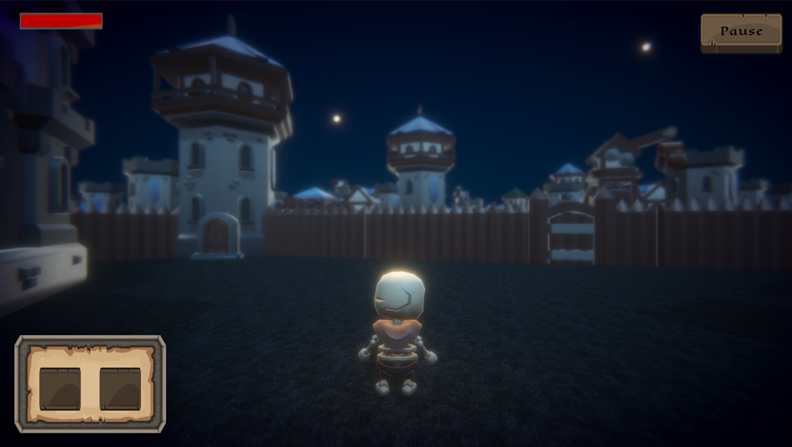
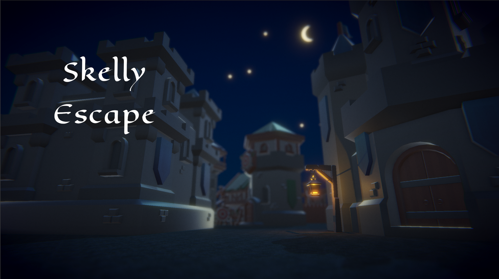

Skelly Escape



Tu objetivo es simple: Alcanza las puertas de la ciudad y escapa del reino de Firekite, haciendo uso de tu ingenio y el cobijo de la noche.Skelly Scape es un juego de Escape Room en tercera persona centrado en la exploración, la estrategia y la toma de decisiones sobre un esqueleto prófugo que administra su inventario para escapar de la ciudad. En esta aventura encarnarás a Oswald Von Henrich —o más bien, lo que queda de él—, un no-muerto que escapó de las mazmorras del reino de Firekite y ahora busca recobrar la libertad que perdió en vida.
Deberás atravesar un territorio lleno de trampas, torres de vigilancia y obstáculos mientras buscas herramientas y mejoras que te ayuden a sobrevivir tu huida. Pero cuidado: no tienes mucho músculo, por lo tanto solo podrás cargar unos cuantos objetos la vez. Cada objeto podría ser la diferencia entre volver a la mazmorra, o ver un nuevo amanecer fuera de la ciudad. Gestiona con cuidado el espacio, y procura recordar donde dejas tiradas las cosas; puede que las vuelvas a necesitar.
Videojuego desarrollado con Unity 6.3. Desarrollado colaborativamente en el marco de la Game Jam Limited Capacity. Desarrollo activo.
Mis Roles:
- Team Lead
- Gameplay Developer
- Technical Artist/Animator
- UI/UX
Tareas Específicas:
- Sistema de Audio Manager
- Sistema de inventario dinámico
- Diseño e implementación de menús (Inicio y Pausa) e inventario
- Pipeline de Post Procesamiento